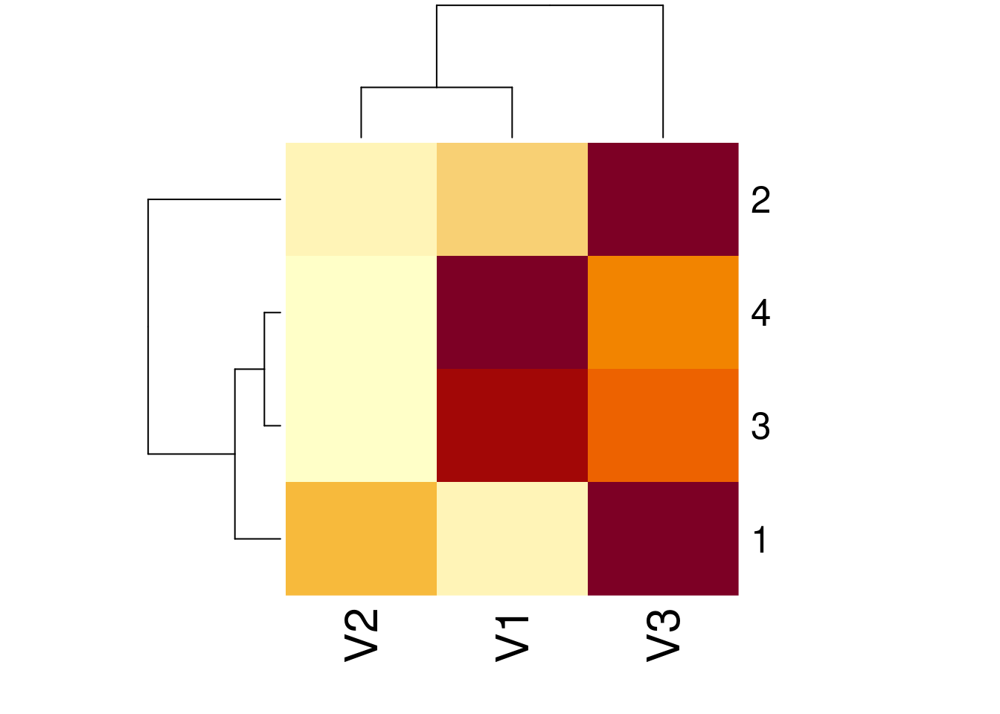

vector <- scan(n = 4)
vector2 <- scan()
str <- readline()
vector
print(vector2)
print(str)
edit(str)R3: Read and write data in R
Input
Output
Read
Write
Path
Working Directory
1 Data input & output in R
As you already know, launching R starts an interactive session with input from the keyboard and output on the screen. If you are using small datasets, you can define and enter your data directly in the Console, as you did in the examples before. Also, you can define your objects and enter your data interactively with the functions scan() and readline() as in the examples below. Regarding the output, you can just call the object by its name or use the function print(), which displays on the screen the contents of its argument object. You can try the code below.1
Although, seldom used, you can also edit the contents of your objects using the function edit(). This function can be used to edit different objects, including vectors, strings, matrices or dataframes. MacOS users may need to install XQuartz X11 tool.
2 Working directory
More often, you can process commands from a script file (a file containing R statements) and also import data from text files, databases (MySQL) or other proprietary formats, such as Excel or GraphPad Prism. We will focus on text files by the moment, as importing files in specific formats requires dedicated external packages. By default, R will read/write in the working directory (wd). The wd is indicated in the Console panel, as you can see below in a screenshot of my Rstudio screen right now.

Note that the abbreviation ‘~’ stands for your home directory (for me /Users/modesto or /home/modesto on MacOS or Linux, respectively).
The functions getwd() and setwd() allow you to check and change the wd. Try the examples below and pay attention to the output. Remember that you can write ?getwd() or ?setwd() for help.
getwd()[1] "/Users/modesto/Documents/GitHub/HPBBM2023"setwd("/Users/modesto")
getwd()[1] "/Users/modesto"# Obviously the path must call an existing directory (no
# typos allowed)
setwd("/Users/modsto/Documents/GitHub/HPBBM2023")Error in setwd("/Users/modsto/Documents/GitHub/HPBBM2023"): cannot change working directorysetwd("/Users/modesto/Documents/GitHub/HPBBM2023")
getwd()[1] "/Users/modesto/Documents/GitHub/HPBBM2023"In RStudio, the default working directory can be set from the “tools” and “global options” menu. Also, you can change the wd for your session in the menu Session > Set Working Directory and change it to that of source file (for instant your R script), the project or the selected directory in the files panel.
2.1 Quick exercise (I)
Let’s see if you understood. Consider the following tree of directories.

How would you change de wd to the folder HPBBM2023/data? You also can try with your own computer and your directory tree.
3 Reading/writing data in R
The most common way to read your data in R is importing it as a table, using the function read.table(). Note that the resultant object will become a Dataframe, even when all the entries got to be numeric. A followup call towards as.matrix() will turn it into in a matrix.
In the following example lines we read a file called small_matrix.csv, located in the data folder. If we attempt to make some matrix calculations, R will force the dataframe to a matrix when possible, but it will return an Error for many matrix-specific operations or functions unless, we transform the dataframe into a matrix.
sm <- read.table("small_matrix.csv", sep = ",") #what happens here?Warning in file(file, "rt"): cannot open file 'small_matrix.csv': No such file
or directoryError in file(file, "rt"): cannot open the connection# check the path
getwd()[1] "/Users/modesto/Documents/GitHub/HPBBM2023"# now we use the right path
sm <- read.table("data/small_matrix.csv", sep = ",")
sm V1 V2 V3
1 2 7 19
2 22 10 80
3 18 3 13
4 25 6 16# is this an object type matrix?
is.matrix(sm)[1] FALSE# can we operate with it as a matrix?
t(sm) [,1] [,2] [,3] [,4]
V1 2 22 18 25
V2 7 10 3 6
V3 19 80 13 16# we can force an object to operate as a matrix
sm * 3 V1 V2 V3
1 6 21 57
2 66 30 240
3 54 9 39
4 75 18 48diag(sm)Error in diag(sm): 'list' object cannot be coerced to type 'double'# some operations cannot coerce a matrix but we can
# explicit it
diag(as.matrix(sm))[1] 2 10 13heatmap(sm)Error in heatmap(sm): 'x' must be a numeric matrixheatmap(as.matrix(sm))
Tip
Note that read.table() and its wrappers read.csv() or read.csv2() are mostly use for reading dataframes. If your want to read text files, like in the case of biological sequences, you can use other functions, like readLines(), described in the Lesson 9.
You can write any data object(s) as binary data file or as text files. Compare the different files saved in the code below.
vector <- c(1:5)
vector2 <- c(3, 5:13)
write(vector2, file = "data/vector2.txt")
write.table(sm, "data/sm.csv")
write.table(sm, "data/sm2.csv", row.names = FALSE, col.names = FALSE,
sep = ",")
save(vector, vector2, file = "data/vector2.Rdata")
save.image(file = "data/myEnvironment.RData")Data files in RData format can be open from the Environment tab or with the load() function. To check that it was correctly loaded, we can remove it before loading with the rm() function.
# remove from the Global Environment in our RStudio session
rm(vector)
rm(vector2)
# load again
load("data/vector2.Rdata")
vector[1] 1 2 3 4 5vector2 [1] 3 5 6 7 8 9 10 11 12 13
Caution
Note that if you save your data with save(), it cannot be restored under a different name. The original object names are automatically used. If you want to save the object and restore it with a different name you need to use the functions saveRDS() and readRDS()
3.1 Quick exercise (II)
We are using the same directory tree. Your wd is HPBBM2022/data and you need to save a data.frame named table1 as table1.csv in the folder HPBBM2023/data using ; as separator. How would you do it without changing the working directory? Try it also with your own computer.
4 Basic Data Management in R
Now we are going to import and explore an example dataset, containing metadata from an Illumina sequencing project of pathogenic E. coli strains (Flament-Simon et al. 2020, https://doi.org/10.1038/s41598-020-69356-6). However, for didactic purposes, the original data have been simplified and manipulated and the attached datasets do not fully correspond to the actual data.
4.1 Open and explore a dataframe
As you can see in the R help, the function read.table() has several default options as FALSE, like header=FALSE. When you have a spreadsheet export file, i.e. having a table where the fields are divided by commas in place of spaces, you can use read.csv() in place of read.table(). For Spaniards, there is also read.csv2(), which uses a comma for the decimal point and a semicolon for the separator. The latter functions are wrappers of read.table() with custom default options. Likewise, there are write.csv() and write.csv2(), which are wrappers of write.table(). Look carefully at the following examples of different ways to open a table (with some common mistakes) and explore them quickly.
# Note differences between read.table(), read.csv() and
# read.csv2()
coli_genomes <- read.table(file = "data/coli_genomes.csv")Error in scan(file = file, what = what, sep = sep, quote = quote, dec = dec, : line 2 did not have 11 elementshead(coli_genomes)Error in eval(expr, envir, enclos): object 'coli_genomes' not foundcoli_genomes <- read.table(file = "data/coli_genomes.csv", sep = ";",
dec = ".", header = TRUE)
head(coli_genomes) Strain Biosample Year.of.isolation Source Phylogroup Serotype Clonotype
1 LREC237 SAMN14278613 NA Human D ONT:H28 CH23-331
2 LREC239 SAMN14278614 2010 Human C O153:H19 CH4-25
3 LREC240 SAMN14278615 2008 Human B1 O76:H30 CH29-38
4 LREC241 SAMN14278616 NA Human A O78:H11 CH11-41
5 LREC242 SAMN14278617 2011 Porcine A ONT:HNM CH7-54
6 LREC243 SAMN14278618 2007 Porcine A O9:H37 CH7-31
Sequence.Type VF No..Plasmids kmer Contigs N50 longest.contig..bp.
1 ST524 18 3 117 223 272287 662555
2 ST88 14 3 117 159 323172 760527
3 ST156 10 2 89 114 270767 738861
4 ST48 5 3 117 212 112160 285056
5 ST746 5 9 89 320 45936 128053
6 ST3011 7 3 93 158 106897 369508
total.assembled.bp contigs...1kb
1 5341632 74
2 5415613 57
3 4875343 47
4 5167401 101
5 4858138 212
6 4638334 93coli_genomes <- read.csv(file = "data/coli_genomes.csv")
head(coli_genomes) Strain.Biosample.Year.of.isolation.Source.Phylogroup.Serotype.Clonotype.Sequence.Type.VF.No..Plasmids.kmer.Contigs.N50.longest.contig..bp..total.assembled.bp.contigs...1kb
1 LREC237;SAMN14278613;NA;Human ;D;ONT:H28;CH23-331;ST524;18;3;117;223;272287;662555;5341632;74
2 LREC239;SAMN14278614;2010;Human ;C;O153:H19;CH4-25;ST88;14;3;117;159;323172;760527;5415613;57
3 LREC240;SAMN14278615;2008;Human ;B1;O76:H30;CH29-38;ST156;10;2;89;114;270767;738861;4875343;47
4 LREC241;SAMN14278616;NA;Human;A;O78:H11;CH11-41;ST48;5;3;117;212;112160;285056;5167401;101
5 LREC242;SAMN14278617;2011;Porcine ;A;ONT:HNM;CH7-54;ST746;5;9;89;320;45936;128053;4858138;212
6 LREC243;SAMN14278618;2007;Porcine ;A;O9:H37;CH7-31;ST3011;7;3;93;158;106897;369508;4638334;93coli_genomes <- read.csv(file = "data/coli_genomes.csv", sep = ";")
head(coli_genomes) Strain Biosample Year.of.isolation Source Phylogroup Serotype Clonotype
1 LREC237 SAMN14278613 NA Human D ONT:H28 CH23-331
2 LREC239 SAMN14278614 2010 Human C O153:H19 CH4-25
3 LREC240 SAMN14278615 2008 Human B1 O76:H30 CH29-38
4 LREC241 SAMN14278616 NA Human A O78:H11 CH11-41
5 LREC242 SAMN14278617 2011 Porcine A ONT:HNM CH7-54
6 LREC243 SAMN14278618 2007 Porcine A O9:H37 CH7-31
Sequence.Type VF No..Plasmids kmer Contigs N50 longest.contig..bp.
1 ST524 18 3 117 223 272287 662555
2 ST88 14 3 117 159 323172 760527
3 ST156 10 2 89 114 270767 738861
4 ST48 5 3 117 212 112160 285056
5 ST746 5 9 89 320 45936 128053
6 ST3011 7 3 93 158 106897 369508
total.assembled.bp contigs...1kb
1 5341632 74
2 5415613 57
3 4875343 47
4 5167401 101
5 4858138 212
6 4638334 93coli_genomes <- read.csv2(file = "data/coli_genomes.csv")
head(coli_genomes) Strain Biosample Year.of.isolation Source Phylogroup Serotype Clonotype
1 LREC237 SAMN14278613 NA Human D ONT:H28 CH23-331
2 LREC239 SAMN14278614 2010 Human C O153:H19 CH4-25
3 LREC240 SAMN14278615 2008 Human B1 O76:H30 CH29-38
4 LREC241 SAMN14278616 NA Human A O78:H11 CH11-41
5 LREC242 SAMN14278617 2011 Porcine A ONT:HNM CH7-54
6 LREC243 SAMN14278618 2007 Porcine A O9:H37 CH7-31
Sequence.Type VF No..Plasmids kmer Contigs N50 longest.contig..bp.
1 ST524 18 3 117 223 272287 662555
2 ST88 14 3 117 159 323172 760527
3 ST156 10 2 89 114 270767 738861
4 ST48 5 3 117 212 112160 285056
5 ST746 5 9 89 320 45936 128053
6 ST3011 7 3 93 158 106897 369508
total.assembled.bp contigs...1kb
1 5341632 74
2 5415613 57
3 4875343 47
4 5167401 101
5 4858138 212
6 4638334 93# read some data
head(coli_genomes) Strain Biosample Year.of.isolation Source Phylogroup Serotype Clonotype
1 LREC237 SAMN14278613 NA Human D ONT:H28 CH23-331
2 LREC239 SAMN14278614 2010 Human C O153:H19 CH4-25
3 LREC240 SAMN14278615 2008 Human B1 O76:H30 CH29-38
4 LREC241 SAMN14278616 NA Human A O78:H11 CH11-41
5 LREC242 SAMN14278617 2011 Porcine A ONT:HNM CH7-54
6 LREC243 SAMN14278618 2007 Porcine A O9:H37 CH7-31
Sequence.Type VF No..Plasmids kmer Contigs N50 longest.contig..bp.
1 ST524 18 3 117 223 272287 662555
2 ST88 14 3 117 159 323172 760527
3 ST156 10 2 89 114 270767 738861
4 ST48 5 3 117 212 112160 285056
5 ST746 5 9 89 320 45936 128053
6 ST3011 7 3 93 158 106897 369508
total.assembled.bp contigs...1kb
1 5341632 74
2 5415613 57
3 4875343 47
4 5167401 101
5 4858138 212
6 4638334 93tail(coli_genomes, n = 2) Strain Biosample Year.of.isolation Source Phylogroup Serotype Clonotype
24 LREC261 SAMN14278636 2016 Human A O98:H26 CH27-23
25 LREC262 SAMN14278637 2012 Human B1 O66:H10 CH4-32
Sequence.Type VF No..Plasmids kmer Contigs N50 longest.contig..bp.
24 ST8233 2 4 89 114 187945 537848
25 ST1049 4 2 113 94 325747 822206
total.assembled.bp contigs...1kb
24 4821342 53
25 4839344 32coli_genomes[1, ] Strain Biosample Year.of.isolation Source Phylogroup Serotype Clonotype
1 LREC237 SAMN14278613 NA Human D ONT:H28 CH23-331
Sequence.Type VF No..Plasmids kmer Contigs N50 longest.contig..bp.
1 ST524 18 3 117 223 272287 662555
total.assembled.bp contigs...1kb
1 5341632 74coli_genomes[, 1] [1] "LREC237" "LREC239" "LREC240" "LREC241" "LREC242" "LREC243" "LREC244"
[8] "LREC245" "LREC246" "LREC247" "LREC248" "LREC249" "LREC250" "LREC251"
[15] "LREC252" "LREC253" "LREC254" "LREC255" "LREC256" "LREC257" "LREC258"
[22] "LREC259" "LREC260" "LREC261" "LREC262"coli_genomes[1:6, 2:4] Biosample Year.of.isolation Source
1 SAMN14278613 NA Human
2 SAMN14278614 2010 Human
3 SAMN14278615 2008 Human
4 SAMN14278616 NA Human
5 SAMN14278617 2011 Porcine
6 SAMN14278618 2007 Porcine # explore the dataframe structure
dim(coli_genomes)[1] 25 16length(coli_genomes)[1] 16ncol(coli_genomes)[1] 16nrow(coli_genomes)[1] 25# dataframe estructure in one line
str(coli_genomes)'data.frame': 25 obs. of 16 variables:
$ Strain : chr "LREC237" "LREC239" "LREC240" "LREC241" ...
$ Biosample : chr "SAMN14278613" "SAMN14278614" "SAMN14278615" "SAMN14278616" ...
$ Year.of.isolation : int NA 2010 2008 NA 2011 2007 2006 2006 2010 2013 ...
$ Source : chr "Human " "Human " "Human " "Human" ...
$ Phylogroup : chr "D" "C" "B1" "A" ...
$ Serotype : chr "ONT:H28" "O153:H19" "O76:H30" "O78:H11" ...
$ Clonotype : chr "CH23-331" "CH4-25" "CH29-38" "CH11-41" ...
$ Sequence.Type : chr "ST524" "ST88" "ST156" "ST48" ...
$ VF : int 18 14 10 5 5 7 4 2 10 22 ...
$ No..Plasmids : int 3 3 2 3 9 3 7 7 1 4 ...
$ kmer : int 117 117 89 117 89 93 115 115 113 113 ...
$ Contigs : int 223 159 114 212 320 158 277 203 131 215 ...
$ N50 : int 272287 323172 270767 112160 45936 106897 89185 94368 326769 248158 ...
$ longest.contig..bp.: int 662555 760527 738861 285056 128053 369508 281444 280268 451887 504233 ...
$ total.assembled.bp : int 5341632 5415613 4875343 5167401 4858138 4638334 5406295 4796593 5173794 5364777 ...
$ contigs...1kb : int 74 57 47 101 212 93 155 114 56 76 ...# type of data in each variable
typeof(coli_genomes$Strain)[1] "character"typeof(coli_genomes[, 2])[1] "character"typeof(coli_genomes[, 9])[1] "integer"# col and row names
names(coli_genomes) [1] "Strain" "Biosample" "Year.of.isolation"
[4] "Source" "Phylogroup" "Serotype"
[7] "Clonotype" "Sequence.Type" "VF"
[10] "No..Plasmids" "kmer" "Contigs"
[13] "N50" "longest.contig..bp." "total.assembled.bp"
[16] "contigs...1kb" colnames(coli_genomes) [1] "Strain" "Biosample" "Year.of.isolation"
[4] "Source" "Phylogroup" "Serotype"
[7] "Clonotype" "Sequence.Type" "VF"
[10] "No..Plasmids" "kmer" "Contigs"
[13] "N50" "longest.contig..bp." "total.assembled.bp"
[16] "contigs...1kb" rownames(coli_genomes) [1] "1" "2" "3" "4" "5" "6" "7" "8" "9" "10" "11" "12" "13" "14" "15"
[16] "16" "17" "18" "19" "20" "21" "22" "23" "24" "25"names(coli_genomes[3]) <- "Year"
names(coli_genomes)[3] <- "Year"
colnames(coli_genomes[3]) <- "Year"Some of the columns include ‘chr’ data that may be actually a categorical variable, so we can code them as factor. Using the expression as.factor() you can check whether the data would correspond to a text or a categorical variable.
coli_genomes$Source <- as.factor(coli_genomes$Source)
coli_genomes$Phylogroup <- as.factor(coli_genomes$Phylogroup)
str(coli_genomes) #dataframe estructure updated'data.frame': 25 obs. of 16 variables:
$ Strain : chr "LREC237" "LREC239" "LREC240" "LREC241" ...
$ Biosample : chr "SAMN14278613" "SAMN14278614" "SAMN14278615" "SAMN14278616" ...
$ Year : int NA 2010 2008 NA 2011 2007 2006 2006 2010 2013 ...
$ Source : Factor w/ 4 levels "Avian ","Human",..: 3 3 3 2 4 4 4 4 4 3 ...
$ Phylogroup : Factor w/ 4 levels "A","B1","C","D": 4 3 2 1 1 1 1 1 3 4 ...
$ Serotype : chr "ONT:H28" "O153:H19" "O76:H30" "O78:H11" ...
$ Clonotype : chr "CH23-331" "CH4-25" "CH29-38" "CH11-41" ...
$ Sequence.Type : chr "ST524" "ST88" "ST156" "ST48" ...
$ VF : int 18 14 10 5 5 7 4 2 10 22 ...
$ No..Plasmids : int 3 3 2 3 9 3 7 7 1 4 ...
$ kmer : int 117 117 89 117 89 93 115 115 113 113 ...
$ Contigs : int 223 159 114 212 320 158 277 203 131 215 ...
$ N50 : int 272287 323172 270767 112160 45936 106897 89185 94368 326769 248158 ...
$ longest.contig..bp.: int 662555 760527 738861 285056 128053 369508 281444 280268 451887 504233 ...
$ total.assembled.bp : int 5341632 5415613 4875343 5167401 4858138 4638334 5406295 4796593 5173794 5364777 ...
$ contigs...1kb : int 74 57 47 101 212 93 155 114 56 76 ...How many levels are there in Source?? It is not uncommon to see some mistake in our data, usually made when the data were recorded, for example a space may have been inserted before a data value. By default this white space will be kept in the R environment, such that ‘Human’ will be recognized as a different value than ‘Human’. In order to avoid this type of error, we can use the strip.white argument.
unique(coli_genomes$Source)[1] Human Human Porcine Avian
Levels: Avian Human Human Porcine table(coli_genomes$Source)
Avian Human Human Porcine
3 1 16 5 coli_genomes <- read.csv2(file = "data/coli_genomes.csv", strip.white = TRUE)
coli_genomes$Source <- as.factor(coli_genomes$Source)
coli_genomes$Phylogroup <- as.factor(coli_genomes$Phylogroup)
unique(coli_genomes$Source)[1] Human Porcine Avian
Levels: Avian Human PorcineAt this point, you may consider that writing the name of the dataframe every time that you want to work with it can be repetitive. In fact, we don’t need to do it.
attach(coli_genomes) #attach
table(Source)Source
Avian Human Porcine
3 17 5 detach(coli_genomes)Note that attach can be used for any R object, including dataframes, lists, vectors, packages… Once attached, R will consider those objects as databases, located in new, temporal environments.
4.2 Renaming, changing and adding variables
We can also rename some variables to use more easy names.
names(coli_genomes) #see all variable names [1] "Strain" "Biosample" "Year.of.isolation"
[4] "Source" "Phylogroup" "Serotype"
[7] "Clonotype" "Sequence.Type" "VF"
[10] "No..Plasmids" "kmer" "Contigs"
[13] "N50" "longest.contig..bp." "total.assembled.bp"
[16] "contigs...1kb" # rename variables
names(coli_genomes)[3] <- "Year"
names(coli_genomes)[10] <- "Plasmids"
names(coli_genomes)[15] <- "Assembly_length"
names(coli_genomes)[16] <- "contigs1kb"
# check
names(coli_genomes) [1] "Strain" "Biosample" "Year"
[4] "Source" "Phylogroup" "Serotype"
[7] "Clonotype" "Sequence.Type" "VF"
[10] "Plasmids" "kmer" "Contigs"
[13] "N50" "longest.contig..bp." "Assembly_length"
[16] "contigs1kb" We are going to simplify our dataframe by dropping variables:
coli_genomes <- coli_genomes[-c(9:11), ]
# this can be also used to remove rows
coli_genomes[, -1] Biosample Year Source Phylogroup Serotype Clonotype Sequence.Type VF
1 SAMN14278613 NA Human D ONT:H28 CH23-331 ST524 18
2 SAMN14278614 2010 Human C O153:H19 CH4-25 ST88 14
3 SAMN14278615 2008 Human B1 O76:H30 CH29-38 ST156 10
4 SAMN14278616 NA Human A O78:H11 CH11-41 ST48 5
5 SAMN14278617 2011 Porcine A ONT:HNM CH7-54 ST746 5
6 SAMN14278618 2007 Porcine A O9:H37 CH7-31 ST3011 7
7 SAMN14278619 2006 Porcine A O2:H32 CH11-23 ST10 4
8 SAMN14278620 2006 Porcine A ONT:H45 C11-398 ST10888 2
12 SAMN14278624 2013 Human D O145:H28 CH23-331 ST32 22
13 SAMN14278625 2013 Human D O145:H28 CH23-331 ST137 22
14 SAMN14278626 2013 Human D O145:H28 CH23-331 ST32 20
15 SAMN14278627 2013 Human A ONT:H37 C11-54 ST48 1
16 SAMN14278628 2013 Avian A ONT:H19 CH94-23 ST347 2
17 SAMN14278629 2011 Avian B1 O142:H30 C41-35 ST359 9
18 SAMN14278630 2005 Avian C O78:H19 CH4-27 ST88 11
19 SAMN14278631 2012 Human C O8:H19 CH4-54 ST88 14
20 SAMN14278632 2012 Human C O9:H19 CH4-27 ST88 14
21 SAMN14278633 2012 Human A O9:H4 CH7-34 ST46 8
22 SAMN14278634 2015 Human C O9:H19 CH4like-27 ST10890 13
23 SAMN14278635 2012 Human A ONT:H33 CH11-54 ST10 2
24 SAMN14278636 2016 Human A O98:H26 CH27-23 ST8233 2
25 SAMN14278637 2012 Human B1 O66:H10 CH4-32 ST1049 4
Plasmids kmer Contigs N50 longest.contig..bp. Assembly_length contigs1kb
1 3 117 223 272287 662555 5341632 74
2 3 117 159 323172 760527 5415613 57
3 2 89 114 270767 738861 4875343 47
4 3 117 212 112160 285056 5167401 101
5 9 89 320 45936 128053 4858138 212
6 3 93 158 106897 369508 4638334 93
7 7 115 277 89185 281444 5406295 155
8 7 115 203 94368 280268 4796593 114
12 1 115 376 200150 424527 5389075 131
13 3 111 205 281589 617142 5340478 78
14 1 113 206 182651 412836 5276782 95
15 0 113 140 105396 272304 4507328 78
16 0 117 134 110661 497785 4664768 77
17 4 113 102 240847 460510 4992565 42
18 4 113 108 405376 1190696 5196698 38
19 2 113 108 281822 1140163 5252065 43
20 4 91 224 140521 284241 5085107 110
21 4 85 204 86565 300086 4915667 121
22 3 113 171 326962 749412 5200701 77
23 5 117 120 228491 576949 4881205 48
24 4 89 114 187945 537848 4821342 53
25 2 113 94 325747 822206 4839344 32We know the ‘Assembly length’ and the number of ‘Contigs’, but we would like to represent the average contig length.
coli_genomes$average_contig <- coli_genomes$Assembly_length/coli_genomes$Contigs4.3 Dealing with NAs
It is very easy to calculate statistics of one variable. Imagine we want to know the average year of sample isolation.
mean(coli_genomes$Year)[1] NAAs you may have guessed, the NA output means that there are some NA values and mean cannot be calculated. We can check that and omit the NAs.
# check for NA values
is.na(coli_genomes) Strain Biosample Year Source Phylogroup Serotype Clonotype Sequence.Type
1 FALSE FALSE TRUE FALSE FALSE FALSE FALSE FALSE
2 FALSE FALSE FALSE FALSE FALSE FALSE FALSE FALSE
3 FALSE FALSE FALSE FALSE FALSE FALSE FALSE FALSE
4 FALSE FALSE TRUE FALSE FALSE FALSE FALSE FALSE
5 FALSE FALSE FALSE FALSE FALSE FALSE FALSE FALSE
6 FALSE FALSE FALSE FALSE FALSE FALSE FALSE FALSE
7 FALSE FALSE FALSE FALSE FALSE FALSE FALSE FALSE
8 FALSE FALSE FALSE FALSE FALSE FALSE FALSE FALSE
12 FALSE FALSE FALSE FALSE FALSE FALSE FALSE FALSE
13 FALSE FALSE FALSE FALSE FALSE FALSE FALSE FALSE
14 FALSE FALSE FALSE FALSE FALSE FALSE FALSE FALSE
15 FALSE FALSE FALSE FALSE FALSE FALSE FALSE FALSE
16 FALSE FALSE FALSE FALSE FALSE FALSE FALSE FALSE
17 FALSE FALSE FALSE FALSE FALSE FALSE FALSE FALSE
18 FALSE FALSE FALSE FALSE FALSE FALSE FALSE FALSE
19 FALSE FALSE FALSE FALSE FALSE FALSE FALSE FALSE
20 FALSE FALSE FALSE FALSE FALSE FALSE FALSE FALSE
21 FALSE FALSE FALSE FALSE FALSE FALSE FALSE FALSE
22 FALSE FALSE FALSE FALSE FALSE FALSE FALSE FALSE
23 FALSE FALSE FALSE FALSE FALSE FALSE FALSE FALSE
24 FALSE FALSE FALSE FALSE FALSE FALSE FALSE FALSE
25 FALSE FALSE FALSE FALSE FALSE FALSE FALSE FALSE
VF Plasmids kmer Contigs N50 longest.contig..bp. Assembly_length
1 FALSE FALSE FALSE FALSE FALSE FALSE FALSE
2 FALSE FALSE FALSE FALSE FALSE FALSE FALSE
3 FALSE FALSE FALSE FALSE FALSE FALSE FALSE
4 FALSE FALSE FALSE FALSE FALSE FALSE FALSE
5 FALSE FALSE FALSE FALSE FALSE FALSE FALSE
6 FALSE FALSE FALSE FALSE FALSE FALSE FALSE
7 FALSE FALSE FALSE FALSE FALSE FALSE FALSE
8 FALSE FALSE FALSE FALSE FALSE FALSE FALSE
12 FALSE FALSE FALSE FALSE FALSE FALSE FALSE
13 FALSE FALSE FALSE FALSE FALSE FALSE FALSE
14 FALSE FALSE FALSE FALSE FALSE FALSE FALSE
15 FALSE FALSE FALSE FALSE FALSE FALSE FALSE
16 FALSE FALSE FALSE FALSE FALSE FALSE FALSE
17 FALSE FALSE FALSE FALSE FALSE FALSE FALSE
18 FALSE FALSE FALSE FALSE FALSE FALSE FALSE
19 FALSE FALSE FALSE FALSE FALSE FALSE FALSE
20 FALSE FALSE FALSE FALSE FALSE FALSE FALSE
21 FALSE FALSE FALSE FALSE FALSE FALSE FALSE
22 FALSE FALSE FALSE FALSE FALSE FALSE FALSE
23 FALSE FALSE FALSE FALSE FALSE FALSE FALSE
24 FALSE FALSE FALSE FALSE FALSE FALSE FALSE
25 FALSE FALSE FALSE FALSE FALSE FALSE FALSE
contigs1kb average_contig
1 FALSE FALSE
2 FALSE FALSE
3 FALSE FALSE
4 FALSE FALSE
5 FALSE FALSE
6 FALSE FALSE
7 FALSE FALSE
8 FALSE FALSE
12 FALSE FALSE
13 FALSE FALSE
14 FALSE FALSE
15 FALSE FALSE
16 FALSE FALSE
17 FALSE FALSE
18 FALSE FALSE
19 FALSE FALSE
20 FALSE FALSE
21 FALSE FALSE
22 FALSE FALSE
23 FALSE FALSE
24 FALSE FALSE
25 FALSE FALSE# alternative to check only NA-containing rows (a FALSE
# output indicates an incomplete observation)
complete.cases(coli_genomes) [1] FALSE TRUE TRUE FALSE TRUE TRUE TRUE TRUE TRUE TRUE TRUE TRUE
[13] TRUE TRUE TRUE TRUE TRUE TRUE TRUE TRUE TRUE TRUE# na.rm=TRUE will omit the NAs for this function
mean(coli_genomes$Year, na.rm = TRUE)[1] 2011What if we want to remove observations with an NA from the whole table?
# create a new data.frame without NAs
coli_genomes2 <- na.omit(coli_genomes)
# can we now compute the mean without na.rm=T?
mean(coli_genomes2$Year)[1] 2011In fact, you can use na.omit() for any object, either an vector, data.frame or a list.
4.4 Quick exercise (III)
Now, we need to save the current version of coli_genomes in the data folder, using the , as field separator.
Which of the following functions can you use to save the dataframe using , as field separator?
How would you do it?
Select the right answerFinally, do save the new dataset in your folder for future examples.
write.csv(coli_genomes, "data/coli_genomes_renamed.csv", row.names = FALSE)5 References
An introduction to R, https://intro2r.com/work-d.html
R programming for data science, https://bookdown.org/rdpeng/rprogdatascience/
Using RStudio projects, https://support.rstudio.com/hc/en-us/articles/200526207
Importar y exportar datos en R, https://rsanchezs.gitbooks.io/rprogramming/content/chapter3/index.html
R in action. Robert I. Kabacoff. March 2022 ISBN 9781617296055
R para análisis científicos reproducibles. Sofware Carpentry Foundation. https://swcarpentry.github.io/r-novice-gapminder-es/
6 Review exercises
Try the input/output examples from Techvidvan website https://techvidvan.com/tutorials/r-input-and-output-functions/
Load the file colis3.csv as colis and explore the dataset structure.
Calculate the mean of numerical variables: isolation date (Year), antimicrobial resistance genes (AMR), virulence factors (VF), CRISPR cassesttes (CRISPR), integron cassettes (Integron) and sequencing date (seqs) in those strains? Note. For the seqs variable you will need to use the function
as.Date().Save the tables coli_genomes_renamed and colis in a single Rdata file.
Add the values of the exercise 3 as a last row in the table. Note. For the seqs variable you will need to use the function
format.Date()(or justformat())
7 Session Info
sessionInfo()R version 4.3.0 (2023-04-21)
Platform: x86_64-apple-darwin20 (64-bit)
Running under: macOS Ventura 13.5.2
Matrix products: default
BLAS: /Library/Frameworks/R.framework/Versions/4.3-x86_64/Resources/lib/libRblas.0.dylib
LAPACK: /Library/Frameworks/R.framework/Versions/4.3-x86_64/Resources/lib/libRlapack.dylib; LAPACK version 3.11.0
locale:
[1] en_US.UTF-8/en_US.UTF-8/en_US.UTF-8/C/en_US.UTF-8/en_US.UTF-8
time zone: Europe/Madrid
tzcode source: internal
attached base packages:
[1] stats graphics grDevices utils datasets methods base
other attached packages:
[1] formatR_1.14 knitr_1.44 webexercises_1.1.0
loaded via a namespace (and not attached):
[1] htmlwidgets_1.6.2 compiler_4.3.0 fastmap_1.1.1 cli_3.6.1
[5] htmltools_0.5.6.1 tools_4.3.0 rstudioapi_0.15.0 yaml_2.3.7
[9] rmarkdown_2.25 jsonlite_1.8.7 digest_0.6.33 xfun_0.40
[13] rlang_1.1.1 evaluate_0.22 Footnotes
Since it is interactive we cannot run it when we render the source file into a web page. This can be prevented in markdown/quarto with the option `eval: false` in the chunk.↩︎